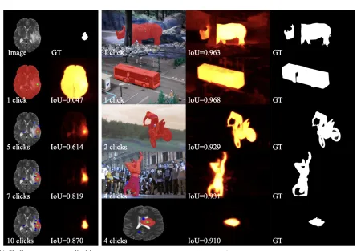
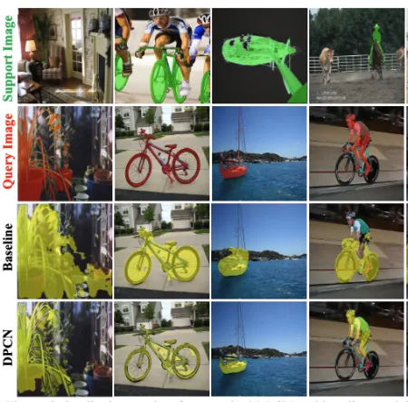
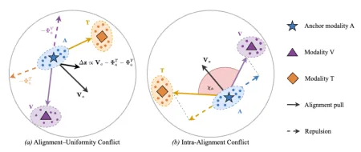
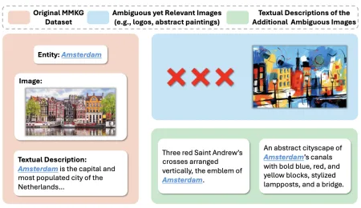
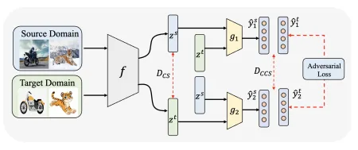
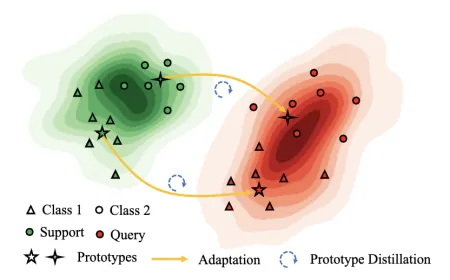
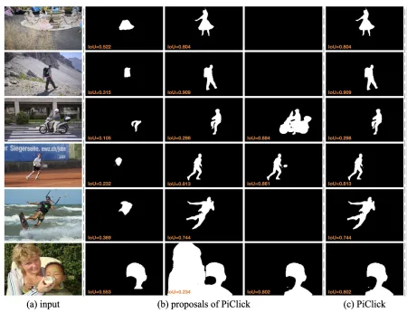
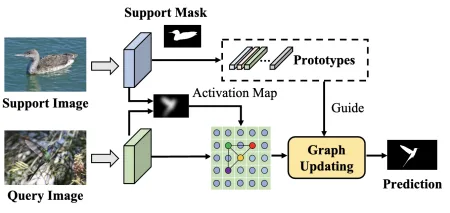
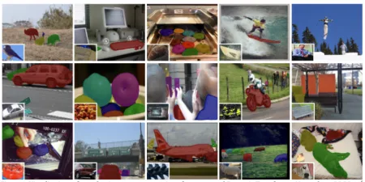
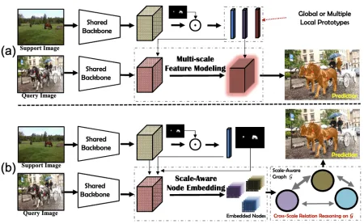

Jie Liu 刘杰
- Nov 2026I received the Chinese Government Award for Outstanding Self-Financed Students Abroad. Grateful for the support from my motherland! 2026年11月我荣获国家优秀自费留学生奖学金，感谢祖国的支持！
- Nov 2025I started my postdoc at TU/e, working with Prof. Joaquin Vanschoren on LLMs and MLLMs. 2025年11月我开始在 TU/e 从事博士后研究，与 Joaquin Vanschoren 教授合作研究 LLMs 与 MLLMs。
- June 2025One paper on vision-language models was accepted in ICCV 2025, see you in Hawaii! 2025年6月一篇关于视觉-语言模型的论文被 ICCV 2025 接收，夏威夷见！
- June 2025I started my internship at Meshcapade and work with Dr. Yan Zhang on motion generation. 2025年6月我开始在 Meshcapade 实习，与 Yan Zhang 博士合作研究动作生成。
- May 2025Our work NPISeg3D on Interactive 3D Segmentation was accepted in ICML2025! See you in Vancouver! 2025年5月我们关于交互式 3D 分割的工作 NPISeg3D 被 ICML 2025 接收！温哥华见！
- Jan 2025CaPo, our first work on Embodied Agents, was accepted in ICLR2025, see you in Singapore. 2025年1月我们在具身智能体方向的首个工作 CaPo 被 ICLR 2025 接收，新加坡见。
- Sept 2024I am visiting Prof. Pan Zhou in Singapore. 2024年9月我在新加坡访问 Pan Zhou 教授。
- July 2024We present CPlot for Interactive Segmentation in ECCV2024, see you in Milano. 2024年7月我们在 ECCV 2024 展示交互式分割工作 CPlot，米兰见。
- June 2024One paper with Wenzhe Yin on Domain Adaptation was accepted in UAI 2024, see you in Barcelona. 2024年6月我与 Wenzhe Yin 合作的域自适应论文被 UAI 2024 接收，巴塞罗那见。
- Sept 2023We present prototype adaption for Few-shot point cloud segmentation in 3DV2024, see you in Davos. 2023年9月我们在 3DV 2024 展示小样本点云分割的原型自适应方法，达沃斯见。
- Sept 2022Our work on Few-shot Segmentation with Graph Convolution Network was accepted to BMVC2022. 2022年9月我们关于图卷积的小样本分割工作被 BMVC 2022 接收。
- June 2022One paper with Haochen Wang on Few-shot Segmentation was accepted to ACM MM 2022. 2022年6月我与 Haochen Wang 合作的小样本分割论文被 ACM MM 2022 接收。
- March 2022Our work on Few-shot Segmentation with Prototype Convolution was accepted to CVPR 2022. 2022年3月我们关于原型卷积的小样本分割工作被 CVPR 2022 接收。
- Sept 2021I joined VISLAB as a PhD candidate. 2021年9月我加入 VISLAB 成为博士生。
About Me 关于我
I am a Postdoc Researcher at TU/e AMOR/e Lab, working with Prof. Joaquin Vanschoren on LLMs and MLLMs (funded by project OpenEuroLLM). Previously I was an ELLIS Ph.D. candidate at VISLAB, University of Amsterdam (UvA), supervised by Prof. Efstratios Gavves and Prof. Jan-Jakob Sonke. I did a fantastic internship at Meshcapade, advised by Dr. Yan Zhang, Dr. Yu Sun, and Prof. Michael J. Black. I also worked closely with Prof. Pan Zhou. 我目前是 TU/e AMOR/e Lab 的博士后研究员，与 Joaquin Vanschoren 教授合作研究 LLMs 与 MLLMs（由 OpenEuroLLM 资助）。 此前我在阿姆斯特丹大学（UvA）VISLAB 担任 ELLIS 博士生， 导师为 Efstratios Gavves 教授 和 Jan-Jakob Sonke 教授。 我曾在 Meshcapade 实习，由 Yan Zhang 博士、Yu Sun 博士 和 Michael J. Black 教授 指导。 此外，我与 Pan Zhou 教授有紧密合作。
I serve as a regular reviewer for CVPR, ICCV, ECCV, NeurIPS, ICLR, ICML, T-PAMI and IJCV. 我长期担任 CVPR、ICCV、ECCV、NeurIPS、ICLR、ICML、T-PAMI 和 IJCV 的审稿人。
Research Interests 研究兴趣
My research aims to develop human-centered AI that augment human capabilities in perception, reasoning, and interaction with the world. To achieve this, I am focusing on the following topics: 我的研究旨在发展以人为中心的 AI，增强人类在感知、推理与交互方面的能力。为此我重点关注以下方向：
• Generalizable Perception: interactive segmentation, 3D scene understanding, multi-modal learning • 可泛化感知：交互式分割、3D 场景理解、多模态学习
• Generative Models: LLMs and MLLMs reasoning, interactive world models, vision-language models • 生成模型：LLMs 与 MLLMs 推理、交互式世界模型、视觉-语言模型
• Embodied Agents: embodied reasoning,human-scene interaction, multi-agent cooperation • 具身智能体：具身推理、人-场景交互、多智能体协作
Hobbies 兴趣爱好
I'm a sports enthusiast with a passion for snowboarding and badminton. I also hold a 2nd-degree black belt in Taekwondo. Whether on the slopes, the court, or in training, I love pushing my limits and shaping my skills. 我热爱运动，尤其喜欢滑雪板和羽毛球，并拥有跆拳道二段黑带。 无论在雪道、球场还是训练中，我都享受挑战自我、打磨技能。
Selected Publications 代表性论文
-
Preprint'26Open-Vocabulary Functional 3D Human-Scene Interaction Generation 开放词汇的功能性三维人-场景交互生成
Jie Liu, Yu Sun, Alpár Cseke, Yao Feng, Nicolas Hron, Michael J. Black, Yan Zhang Jie Liu, Yu Sun, Alpár Cseke, Yao Feng, Nicolas Hron, Michael J. Black, Yan Zhang
arXiv, 2026 — work done as an intern at Meshcapade arXiv，2026 — 在 Meshcapade 实习期间完成
-
ICCV'25Probabilistic Prototype Calibration of Vision-language Models for Generalized Few-shot Semantic Segmentation 面向广义小样本语义分割的视觉-语言模型概率原型校准
Jie Liu, Jiayi Shen, Pan Zhou, Jan-Jakob Sonke, Efstratios Gavves Jie Liu, Jiayi Shen, Pan Zhou, Jan-Jakob Sonke, Efstratios Gavves
International Conference on Computer Vision (ICCV), 2025 国际计算机视觉大会（ICCV），2025
-
ICML'25NPISeg3D: Probabilistic Interactive 3D Segmentation with Hierarchical Neural Processes NPISeg3D：层级神经过程的概率交互式 3D 分割
Jie Liu, Pan Zhou, Zehao Xiao, Jiayi Shen, Wenzhe Yin, Jan-Jakob Sonke, Efstratios Gavves Jie Liu, Pan Zhou, Zehao Xiao, Jiayi Shen, Wenzhe Yin, Jan-Jakob Sonke, Efstratios Gavves
International Conference on Machine Learning (ICML), 2025 国际机器学习大会（ICML），2025
-
ICLR'25CaPo: Cooperative Plan Optimization for Efficient Embodied Multi-agent Cooperation CaPo：高效具身多智能体协作的协同计划优化
Jie Liu, Pan Zhou, Yingjun Du, Ah-Hwee Tan, Cees GM Snoek, Jan-Jakob Sonke, Efstratios Gavves Jie Liu, Pan Zhou, Yingjun Du, Ah-Hwee Tan, Cees GM Snoek, Jan-Jakob Sonke, Efstratios Gavves
International Conference on Learning Representations (ICLR), 2025 国际学习表征会议（ICLR），2025
-
ECCV'24

CPlot: Click Prompt Learning with Optimal Transport for Interactive Segmentation CPlot：面向交互式分割的最优传输点击提示学习
Jie Liu, Haochen Wang, Wenzhe Yin, Jan-Jakob Sonke, Efstratios Gavves Jie Liu, Haochen Wang, Wenzhe Yin, Jan-Jakob Sonke, Efstratios Gavves
European Conference on Computer Vision (ECCV), 2024 欧洲计算机视觉会议（ECCV），2024
-
CVPR'22

Dynamic Prototype Convolution Network for Few-shot Semantic Segmentation 动态原型卷积网络用于少样本语义分割
Jie Liu, Yanqi Bao, Guosen Xie, Huan Xiong, Jan-Jakob Sonke, Efstratios Gavves Jie Liu, Yanqi Bao, Guosen Xie, Huan Xiong, Jan-Jakob Sonke, Efstratios Gavves
Conference on Computer Vision and Pattern Recognition (CVPR), 2022 计算机视觉与模式识别会议（CVPR），2022
Other Publications 其他论文
-
ICML'26

Towards Uniformity and Alignment for Multimodal Representation Learning 面向多模态表征学习的统一性与对齐
Wenzhe Yin, Pan Zhou, Zehao Xiao, Jie Liu, Shujian Yu, Jan-Jakob Sonke, Efstratios Gavves Wenzhe Yin, Pan Zhou, Zehao Xiao, Jie Liu, Shujian Yu, Jan-Jakob Sonke, Efstratios Gavves
International Conference on Machine Learning (ICML), 2026 国际机器学习大会（ICML），2026
-
ESWC'26

Are a Thousand Words Better Than a Single Picture? Beyond Images - A Framework for Multi-Modal Knowledge Graph Dataset Enrichment 千言胜过一图？超越图像：用于多模态知识图谱数据集增强的框架
Pengyu Zhang, Klim Zaporojets, Jie Liu, Jia-Hong Huang, Paul Groth Pengyu Zhang, Klim Zaporojets, Jie Liu, Jia-Hong Huang, Paul Groth
European Semantic Web Conference (ESWC), 2026 欧洲语义网会议（ESWC），2026
-
UAI'24

Domain Adaptation with Cauchy-Schwarz Divergence 基于柯西-施瓦茨散度的领域自适应
Wenzhe Yin, Shujian Yu, Yicong Lin, Jie Liu, Jan-Jakob Sonke, Efstratios Gavves Wenzhe Yin, Shujian Yu, Yicong Lin, Jie Liu, Jan-Jakob Sonke, Efstratios Gavves
Conference on Uncertainty in Artificial Intelligence (UAI), 2024 不确定性人工智能会议（UAI），2024
-
3DV'24

Dynamic Prototype Adaptation with Distillation for Few-shot Point Cloud Segmentation 动态原型蒸馏的少样本点云分割
Jie Liu, Wenzhe Yin, Haochen Wang, Yunlu Chen, Jan-Jakob Sonke, Efstratios Gavves Jie Liu, Wenzhe Yin, Haochen Wang, Yunlu Chen, Jan-Jakob Sonke, Efstratios Gavves
International Conference on 3D Vision (3DV), 2024 国际 3D 视觉会议（3DV），2024
-
TMM'23

PiClick: Picking the Desired Mask in Click-based Interactive Segmentation PiClick：点击交互分割中的目标掩码选择
Cilin Yan, Haochen Wang, Jie Liu, Xiaolong Jiang, Yao Hu, Xu Tang, Guoliang Kang, Efstratios Gavves Cilin Yan, Haochen Wang, Jie Liu, Xiaolong Jiang, Yao Hu, Xu Tang, Guoliang Kang, Efstratios Gavves
IEEE Transactions on Multimedia (TMM), 2023 IEEE 多媒体汇刊（TMM），2023
-
BMVC'22

Few-shot Semantic Segmentation with Support-Induced Graph Convolutional Network 支持诱导图卷积的少样本语义分割
Jie Liu, Yanqi Bao, Haochen Wang, Wenzhe Yin, Jan-Jakob Sonke, Efstratios Gavves Jie Liu, Yanqi Bao, Haochen Wang, Wenzhe Yin, Jan-Jakob Sonke, Efstratios Gavves
British Machine Vision Conference (BMVC), 2022 英国机器视觉会议（BMVC），2022
-
ACM MM'22

Dynamic Transformer for Few-shot Instance Segmentation 动态 Transformer 用于少样本实例分割
Haochen Wang, Jie Liu, Yongtuo Liu, Subhransu Maji, Jan-Jakob Sonke, Efstratios Gavves Haochen Wang, Jie Liu, Yongtuo Liu, Subhransu Maji, Jan-Jakob Sonke, Efstratios Gavves
Proceedings of the 30th ACM International Conference on Multimedia (ACM MM), 2022 第 30 届 ACM 国际多媒体会议（ACM MM），2022
-
CVPR'21

Scale-aware Graph Neural Network for Few-shot Semantic Segmentation 尺度感知图神经网络用于少样本语义分割
Guosen Xie*, Jie Liu*, Huan Xiong, Ling Shao Guosen Xie*, Jie Liu*, Huan Xiong, Ling Shao
Conference on Computer Vision and Pattern Recognition (CVPR), 2021 计算机视觉与模式识别会议（CVPR），2021